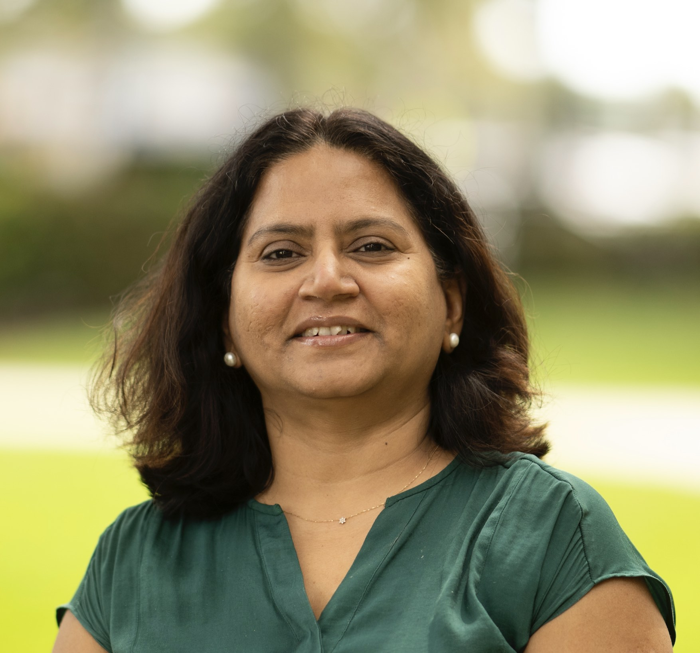
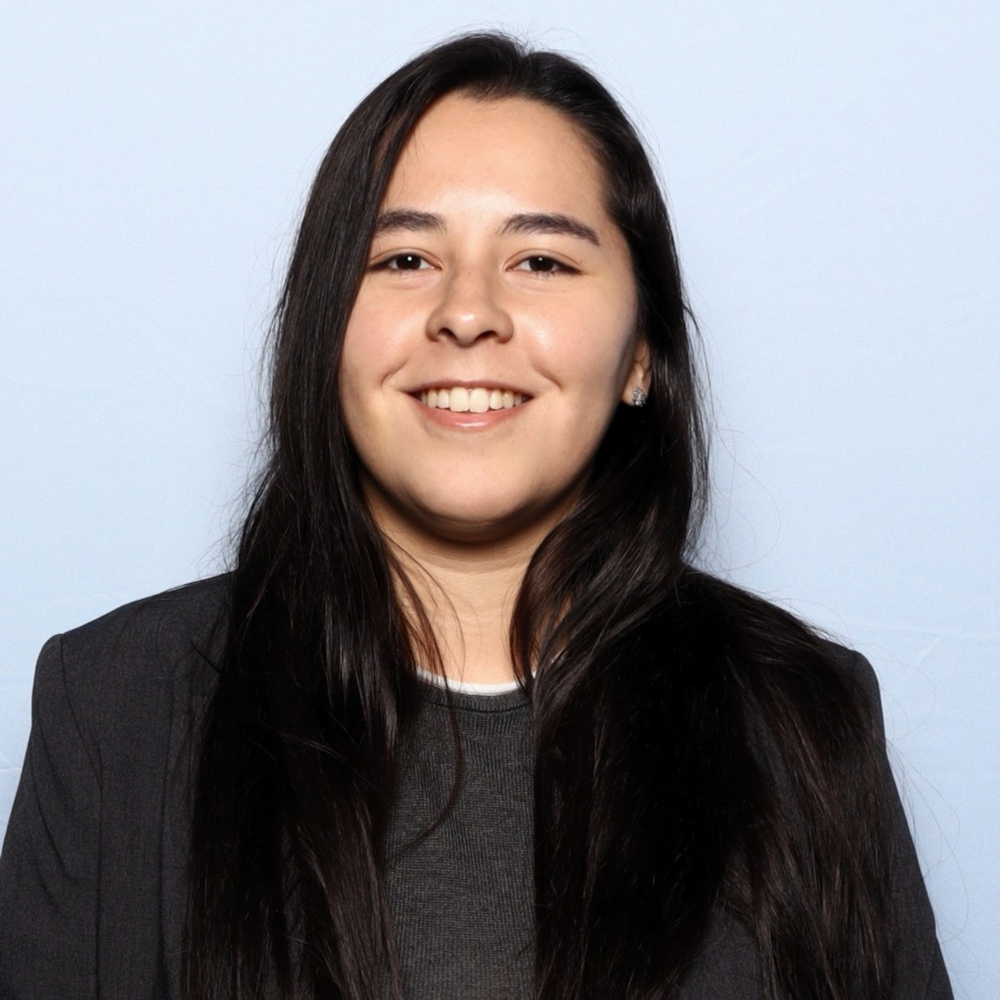
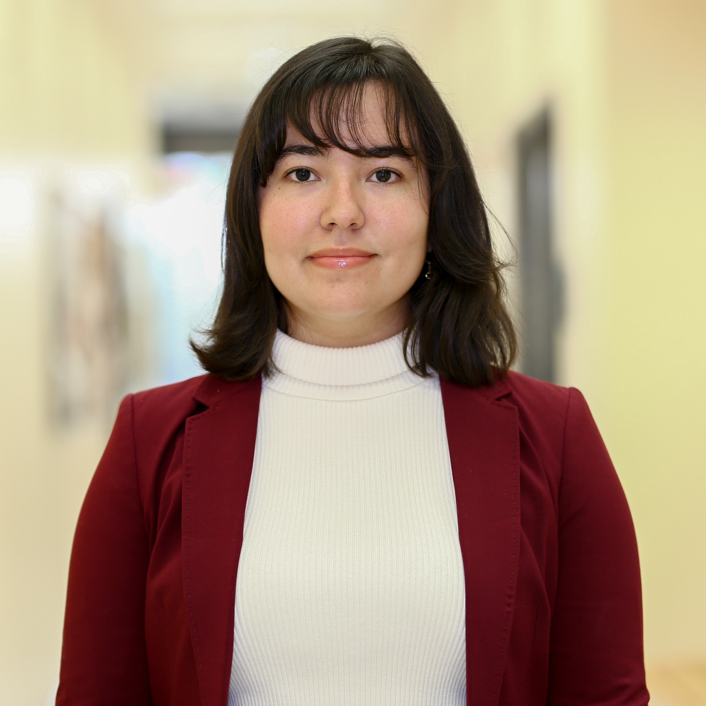
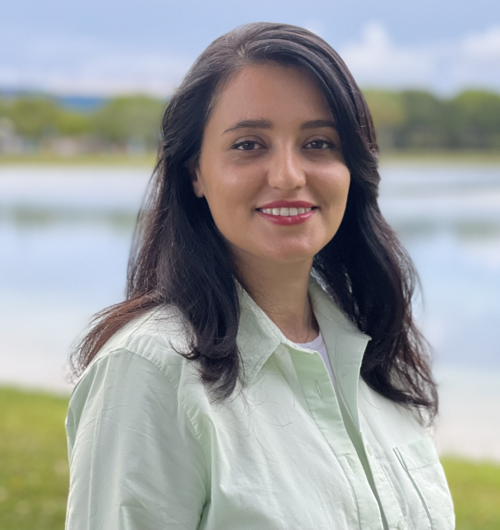
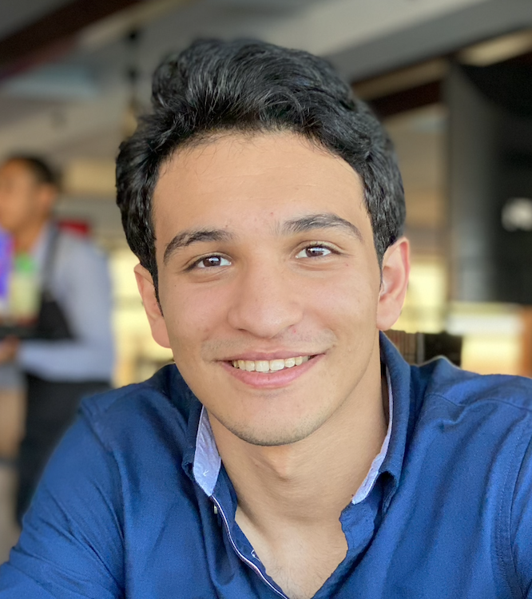
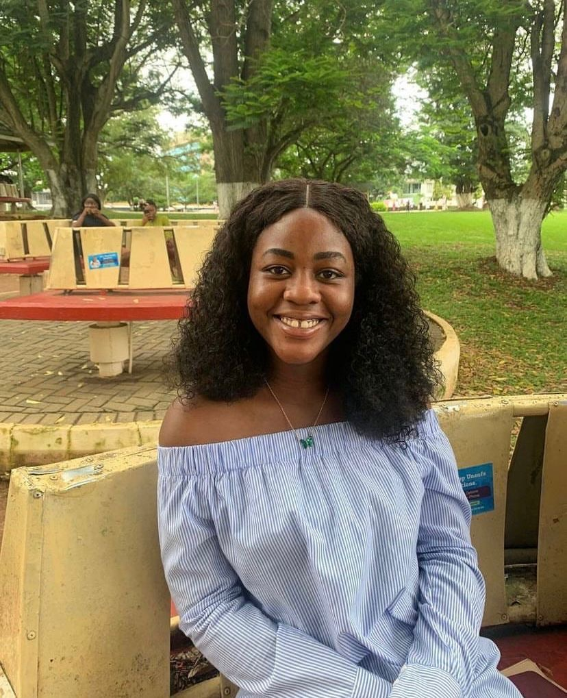
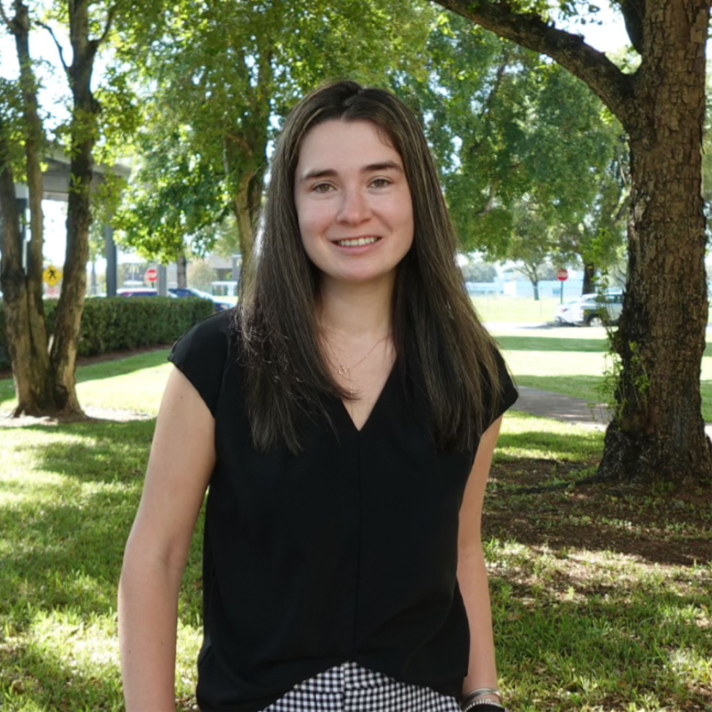

Biomedical Engineering & Mechanical and Materials Engineering · Florida International University
Prasad Lab for Materials Research
We develop biobased and bioinspired materials, study the nanomechanics of biological and engineered composites, and build biomedical devices for healthcare and precision agriculture — combining nanoindentation, molecular dynamics, finite element modeling, and 3D manufacturing.
People
Principal Investigator

Dr. Anamika Prasad
Associate Professor, Biomedical Engineering & Mechanical and Materials Engineering · Associate Director, Center of Innovation in Cardiovascular Health
PhD, Materials Science and Mechanics, MIT (2007) · MS, Civil and Environmental Engineering, MIT (2003) · BTech, Civil Engineering, IIT-Varanasi (1997, Gold Medalist). Research spans biobased and bioinspired materials, tissue biomechanics (bone, bone tumors, plant tissue), nano-mechanical characterization, computational solid mechanics, and 3D printing/electrospinning, with a career-long focus on STEM workforce development for underrepresented populations. Recipient of the 2025 ASME Rising Star of Mechanical Engineering award and a 2021–2026 NSF CAREER Award.
anprasad@fiu.eduHonors & Awards
- ASME Rising Star of Mechanical Engineering — 2025
- SDSU Outstanding Researcher of the Year — 2022
- Jerome J. Lohr College of Engineering Researcher of the Year — 2022
- NSF CAREER Award — 2021–2026 (first ME faculty member to receive this distinction)
- Air Force Research Lab Summer Faculty Fellowship — 2020, 2021
- NASA STAR Fellowship — 2020
- Science Communication Fellow, SD Discovery Center — 2018
- Gandhian Young Technological Innovation Award — 2015
PhD Students

Rachelle A. Gomez-Guevara
Biomedical Engineering · 2024–present
Wallace H. Coulter Fellow.

Ariadna Herrera
Biomedical Engineering · 2024–present
2024 Florida Heart Research Early Career Researcher Award.

Kiyana Saeedian
Mechanical and Materials Engineering · 2023–present
Presidential Fellow.

Basil Usama Ahmad
Biomedical Engineering · 2024–present

Hilda Kafui Nuworku
Mechanical and Materials Engineering · 2023–present

Alexi Switz
Biomedical Engineering · 2023–present
Doctoral Student Grant, FL Heart Research Foundation (2025–present); TMMS Fellow (2023–2025).
Mohammad Salman Ibna Jamal
Biomedical Engineering · 2023–present
MS Students
Daniel Gallego Lopez
Biomedical Engineering · 2023–present
Paula Gustin
Biomedical Engineering · 2022–present
Undergraduate Researchers
Zion Michael
MME · 2022–present
OURS Program.
Jalaica Ann Jaramillo
BME · 2022–present
OURS Program, 2023.
Emily Idiarte
BME · Fall 2024–present
Mentor: Ariadna Herrera.
Jennifer Acevado
BME · CURE Fellow · Spring 2024–present
Dr. Norman R. Weldon BME Summer Research Intern. Mentor: Ariadna Herrera.
Giana Lopez
BME · Fall 2025–present
Mentor: Alexi Switz.
Paula Gait
BME · Fall 2025–present
Mentor: Alexi Switz.
Paulina Perez
BME · Spring 2025–present
Mentor: Rachelle Gomez-Guevara.
Daniela Lozano Infante
BME · Spring 2025–present
Mentor: Rachelle Gomez-Guevara.
Vitaliia Arifova
BME · Fall 2025–Spring 2026
Mentor: Rachelle Gomez-Guevara.
Hafsa Mariam
BME · Fall 2025–Spring 2026
Mentor: Hilda Nuworku.
Nestha Venepally
BME · Fall 2025–present
OUR Fellow. Mentor: Kiyana Saeedian.
Jhoan Gonzales
BME · Spring 2026–present
Postdoc mentor: Utpal Dhar.
Aaron Teijeiro
BME · Spring 2026–present
Mentor: Mohammad Salman Ibna Jamal.
Student Awards & Honors
- Cervexa senior design team (Rachel Valdes, Andres Garcia, Natalie Tellechea, Nestha Venepally) — 1st place, Oral and Poster competitions, Spring 2026
- Rachelle A. Gomez-Guevara — Wallace H. Coulter Fellow (2024); ACerS Travel Award and 3rd prize poster, BME Graduate Day (2026)
- Ariadna Herrera — Florida Heart Research Early Career Researcher Award (2024)
- Kiyana Saeedian — Presidential Fellow, Mechanical and Materials Engineering (2023)
- Alexi Switz — Doctoral Student Grant, FL Heart Research Foundation (2025); TMMS Fellow (2023–2025)
- Laura Guerrero-Acosta — 1st place poster, FIU BME Research Day (Spring 2024); FIU Undergraduate-to-Graduate PhD transition fellowship
- Neurotrack senior design team (Waleed Abusaif, Rebekah Arias, Chenxu Han, Hary Usaquen) — 1st place, Oral Competition, Summer 2023
- Neel Banga (high school researcher) — 1st place, district-level science fair, for an AI database for electrospun fiber analysis (Summer 2024)
Graduate & Postdoctoral Alumni
- Dr. Utpal Dhar — Postdoctoral Researcher
- Dr. Mukesh Roy — PhD, 2021 · Biomechanical investigation of plant vascular tissue for bio-inspired design and flexible composites · now in postdoctoral research on plant biomechanics and bio-inspired design
- Dr. Sakshi Chauhan — PhD, 2019 (IIT Delhi) · Biomechanical investigation of extracorporeal irradiation on resected human bone · now Assistant Professor, Govind Ballabh Pant University
- Jason Hasse — MS/PhD, SDSU · Statistical tools for materials research, co-advised with Dr. Semhar Michael
- Trupti Suresh (Mali) — MS, 2022 · Nanomechanical characterization of additively manufactured GRCop-42 alloy
- Swastika Bera — MS, 2023 · Development of corn kernel-based biocomposite films for food packaging
- Ruhit Sinha — MS, 2020 · Cellulose acetate-based scaffold for bone tissue engineering · now pursuing a PhD
- Temitope Borode — MS · Electrospun tough MXene-based composite nanofibers for sensor applications
- Anirban Chakraborty — MS, 2019 (SDSU) · 3D-printed bioreactor with optimized stimulation for ex-vivo bone tissue culture
- Danendra Agrawal, Devesh Jain, Ankur Mathur, Saurabh Sahu — MTech, IIT Delhi · vascular and joint-mechanics stress analysis theses
- Dr. Manoj Kumar, MD — Joint IIT Delhi/AIIMS · Role of extracorporeal irradiation in malignant bone tumor
- Aditya Sarin — IIT Delhi (Electronics) · now Senior Research Associate
Undergraduate Alumni
- Katrina Jabech — BME, Spring 2023–Fall 2023 · CURE Trainee (2022), CURE Researcher (2023), bioprinting
- Laura Guerrero-Acosta — BME, Spring 2024–Fall 2025 · CURE Fellow · now in FIU's undergraduate-to-graduate PhD transition program
- Peder Solberg — Affordable rotating drum electrospinner for classroom education · now PhD student at Dartmouth
- Ikbal Choudhary — Junior Research Fellow, IIT Delhi, 2014–2016 · now PhD student at Johns Hopkins
- Claire Eggleston — 3D electrospinner · now Sales Associate at Johnson Controls
- Brooklyn VanderWolde — 3D-printed bioreactor for bone cancer research, supported by an SD Space Grant Fellowship
- Zach Dorn — Cellulose fiber reinforcement in cast materials
- Isaiah Duhme, Megan M. Fiala, Ryan Schaefer — senior design team, affordable 3D bioprinter, 2020–2021
- Jordan Von Seggern — MXene-based composite finite element modeling, supported by Air Force Research Lab internship
- Acaydia Campbell — CURE & McNair Fellow, 2022–2023
- Fabio Macias Sarcos — BME, Fall 2022–Spring 2024 · CURE Researcher and OURS Program
- Pranjal Singh, Kishan Sachdeva — BTech projects, IIT Delhi (pulsatile and thoracic aorta blood flow simulation)
- Shilpi Jindal, Sumit Dey Trafadar, Pratyush Sharma, Vaibhav Gupta, Pragyan Pandey — summer interns and fellows, 2013–2015
Research
Plant Biomechanics
Plants function as hierarchical biocomposites. We study how their structure, function, and mechanical response shift under stressors like growth and disease, informing bioinspired design and precision agriculture.
Cellulose-Based Biomaterials
Electrospinning cellulose fibers to overcome solvent and strength limitations, and developing 3D bioprinters and cellulose-based inks for structured scaffold creation.
Bone Biomechanics
Long-term ex-vivo bone tissue culture with mechanical stimulation to study cell–cell and cell–matrix interactions, and how bone responds to high-dose radiation therapy used in tumor treatment.
Additive Manufactured Metallic Alloys
Nanoindentation and microscopy characterization of GRCop-42, a NASA-developed copper-based alloy for 3D-printed applications.
Biomedical Devices
Tonometry-based blood pressure and pulse waveform measurement device development for cardiovascular disease assessment.
Specialized Manufacturing
DIY electrospinner and 3D bioprinter development to make research-grade instrumentation accessible for classrooms and labs.
Active Funding
- NSF I-Corps — RESTORE: Regenerative Scaffold for Tissue Optimization, Repair, and Enhancement ($50,000) · 2026–2027 · PI
- Florida Heart Research Foundation — Advancing Regenerative Approaches for Myocardial Infarction through a Standardized Ex-Vivo Diagnostic Platform for Cardiac Patches ($449,510) · 2024–2027 · PI
- NSF DMREF — Active Learning-Based Material Discovery for 3D Printed Solids with Locally Tunable Electrical and Mechanical Properties, Award #2323696 ($432,418) · 2023–2027 · PI
- NSF CAREER — Mechanics of Next-Generation Composites using Cellulose and Bioinspired Interphases, Award #2304788 ($531,740) · 2021–2026 · PI
- USDA AFRI — Partnerships: Nano-Enabled Smart Sensors for Plant Health Monitoring (FIU share: $163,000) · co-PI (PI: Wang, North Dakota State University)
Recent Proposals Submitted
- NSF Collaborative — FDT-Biotech: Mechanobiology-Guided Digital Twins for Accelerating Bone Regenerative Scaffold Design ($1,000,000; FIU share $624,848) · PI · May 2026
- Florida Dept. of Health — Florida Cancer Innovation Fund: Translating 3D-Printed Regenerative Bone Scaffold Technologies for Pediatric Oncology Patients ($436,621) · Oct 2025
- Florida Dept. of Health — Live Like Bella Pediatric Cancer Research Initiative: Engineered Periosteum Scaffold for Bone Regeneration and Drug Delivery ($250,000) · Feb 2026
- USDA AFRI — Partnership: Engineered Electrospun Carrier for Nanoscale Delivery of Biomolecules in Plant Health Management ($800,000) · Nov 2025
Publications
Submitted
-
Framework for Data-Driven Design and Discovery of PEGDA Hydrogel through Insights from Structure, Processing, and Mechanical Tunability
Submitted
2026
-
Framework for Integrating the Finite Element Method and a Statistical Learning Approach for Characterizing the Effect of Process Parameters on Mechanical Response
Cureus Journal of Engineering, 2026 · Link -
Impact of temperature and humidity on the structural and biocompatibility of 3D-printed PLA scaffolds for bone regeneration
Scientific Reports, 2026 · Link -
MicroStretch: Microstretcher designed for live imaging on microscopic stages
HardwareX, 2026 · Link
2025
-
Multiscale Mechanics of Calcium-Mediated Reinforcement within a Pectin-Cellulose Composite via Integrated MD and Experimental Approach
ACS Applied Materials & Interfaces, 2025 · Link -
Insights into the micromechanics and patterning of growing plant cell wall as a multifunctional composite
Applied Materials Today, 2025 · Link -
Conformational stability of homogalacturonan pectin in water and dry environments: A molecular dynamics study
MRS Advances, 2025 · Link -
Fundamental interactions between pectin and cellulose nanocrystals: a molecular dynamics simulation
Cellulose, 2025 · Link -
Green synthesis of neem extract and neem oil-based azadirachtin nanopesticides for fall armyworm control and management
Ecotoxicology and Environmental Safety, 2025 · Link
2024
-
Mechanical Behavior of MXene-Polymer Layered Nanocomposite Using Computational Finite Element Analysis
Composites Part B: Engineering, 2024 · Link -
EnduroBone: A 3D printed bioreactor for extended bone tissue culture
HardwareX, 2024 · Link -
Affordable lab-scale electrospinning setup with interchangeable collectors for targeted fiber formation
HardwareX, 2024 · Link -
Nanomechanical Evaluation of Additively Manufactured GRCop-42 by Laser Powder Bed Fusion and Directed Energy Deposition
SSRN, 2024 · Link
2023
-
Bioinspired Design Rules from Highly Mineralized Natural Composites for Two-Dimensional Composite Design
Biomimetics, 2023 · Link -
Examining Cellulose-Pectin Interactions in Plant Cell Wall and Implication in Composite Design
American Society for Composites — 38th Technical Conference Proceedings, 2023 -
Full Body Harness Design Modifications and Evaluation: A Senior Design Project
The Journal of Undergraduate Research, 2023 · Link -
Polyaniline-based Sensor for Real-time Plant Growth Monitoring
Sensors and Actuators A: Physical, 2023 · Link
2022
-
Raman Spectroscopy for Nutritional Stress Detection in Plant Vascular Tissue
Materialia, 2022
2020
-
Enhancing Mechanical Properties of Electrospun Cellulose Acetate Fibers upon Potassium Chloride Exposure
Materialia, 2020 · Link -
Biomechanics of Vascular Plant as Template for Engineering Design
Materialia, 2020 -
Bioimpedance Analysis of Vascular Tissue and Fluid Flow in Humans and Plants: A Review
Biosystems Engineering, 2020 · Link -
Nanomechanical Characterization of Additive Manufactured Gr-Cop-42 Alloy Developed by Directed Energy Deposition Method
ASME IMECE Proceedings, 2020 · Link -
Investigation of Additive Manufactured Gr-Cop 42 Alloy Developed by Blown Powder Deposition
ASME IMECE Proceedings, 2020 · Link -
Design of a 3D Printed Bioreactor for Bone Cancer Research
The Journal of Undergraduate Research, 2020 · Link -
Design of an Affordable Rotating Drum Electrospinner for Classroom Education
The Journal of Undergraduate Research, 2020 · Link
2018 and Earlier
-
Raman Spectroscopic Investigation of Bone post Extracorporeal Irradiation
Calcified Tissue International, 2018 -
A Novel Modular Tonometry Based Device to Measure Pulse Pressure Waveform in Radial Artery
ASME Journal of Medical Devices, 2017 -
A Computational Study to Investigate the Effect of Tonometry Geometry and Patient-Specific Variability on Radial Artery Tonometry
Journal of Biomechanics, 2017 -
Biomechanical Investigation of Extracorporeal Irradiation on Resected Human Bone
Journal of the Mechanical Behavior of Biomedical Materials, 2017 -
Robust Motion Artifact Resistant Circuit for Calculation of Mean Arterial Pressure from Pulse Transit Time
Engineering in Medicine and Biology Conference, 2017 -
Comparative Effectiveness of Thoracic Stent-Graft Design in Curved Vascular System
International Congress on Computational Mechanics and Simulation, 2014 -
A Computational Framework for Investigating the Positional Stability of Abdominal Endografts
Biomechanics and Modeling in Mechanobiology, 2012 -
Computational Analysis of Stresses Acting on Inter-Modular Junctions in Thoracic Aortic Endografts
Journal of Endovascular Therapy, 2011 -
Effect of Dilatation on the Elasto-Plastic Response of Bulk Metallic Glasses under Indentation
Materials Research Society Symposium Proceedings, 2010 -
Steady-State Frictional Sliding Contact on Surfaces of Plastically Graded Materials
Acta Materialia, 2009
Theses from the Group
-
Development of Corn Kernel-based Biocomposite Films for Food Packaging Applications
· Link -
Nanomechanical Characterization and Comparison of Additively Manufactured GRCop-42 Alloy
· Link -
Biomechanical Investigation of Plant Vascular Tissue for Bio-Inspired Design and Flexible Composites
· Link -
Development of Cellulose Acetate-Based Scaffold for Bone Tissue Engineering Applications
· Link -
3D Printed Bioreactor with Optimized Stimulations for Ex-Vivo Bone Tissue Culture
· Link -
Biomechanical Investigation of the Effect of Extracorporeal Irradiation on Resected Human Bone
· Link
News
- Mar 2026 Dr. Prasad gave an invited talk, "Micromechanics and Patterning in Growing Plant Cell Wall for Bioinspired Design and Manufacturing," at TMS San Diego.
- Feb 2026 "Grad students on the front line of cardiac innovation" — FIU News feature on the lab's cardiac patch research.
- 2026–2027 Awarded an NSF I-Corps grant for RESTORE: Regenerative Scaffold for Tissue Optimization, Repair, and Enhancement.
- 2025 Dr. Prasad received the ASME Rising Star of Mechanical Engineering award.
- 2025 "3D-printed bone reconstruction for pediatric cancer patients" featured in FIU News and FIU Research Magazine; the lab's open-source 3D-printed bioreactor was also covered by 3Dprint.com.
- 2024–2027 Awarded a Florida Heart Research Foundation grant to develop a standardized ex-vivo diagnostic platform for cardiac patches.
- 2024–2025 Dr. Prasad named an FIU Faculty Leadership and Success Fellow, Office of the Provost.
- 2023–2027 Received an NSF DMREF award for active learning-based material discovery for 3D printed solids (Award #2323696).
- 2022 Dr. Prasad named SDSU Outstanding Researcher of the Year and Jerome J. Lohr College of Engineering Researcher of the Year.
- 2021–2026 Dr. Prasad received an NSF CAREER Award for mechanics of next-generation composites using cellulose and bioinspired interfaces — the first ME faculty member at SDSU to receive this distinction.
- Sep 2021 The lab was renamed "Prasad Lab for Materials Research" to reflect its expanded scope; PhD student Mukesh Roy successfully defended his thesis.
Contact
Address
Florida International University
10555 West Flagler Street, Suite EC 2678
Miami, FL 33174
Email
anprasad@fiu.edu
Prospective students
We're often looking for motivated graduate and undergraduate students interested in
biobased materials, biomechanics, and biomedical devices. Please email a CV and a short
note about your research interests.